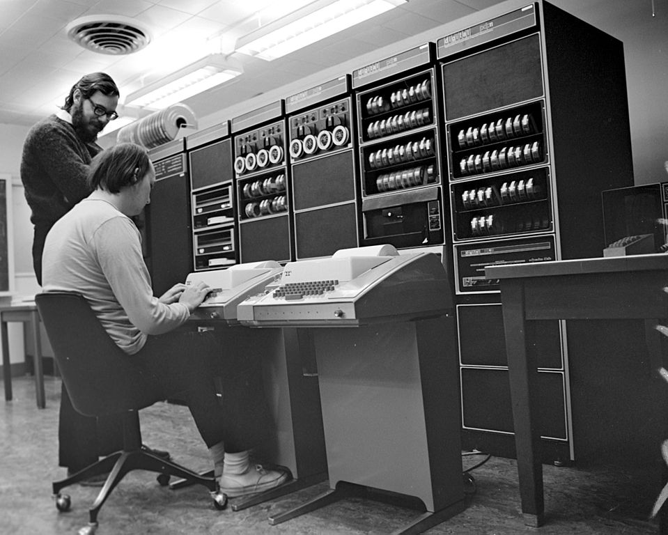
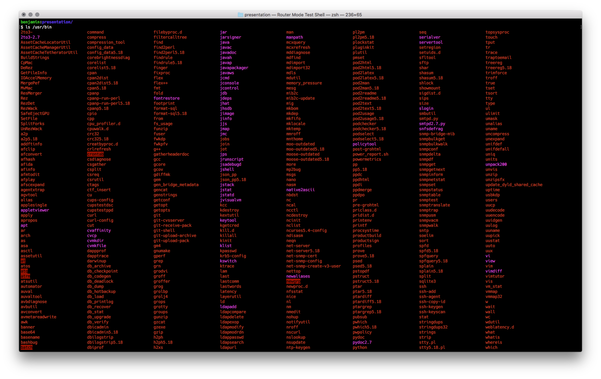
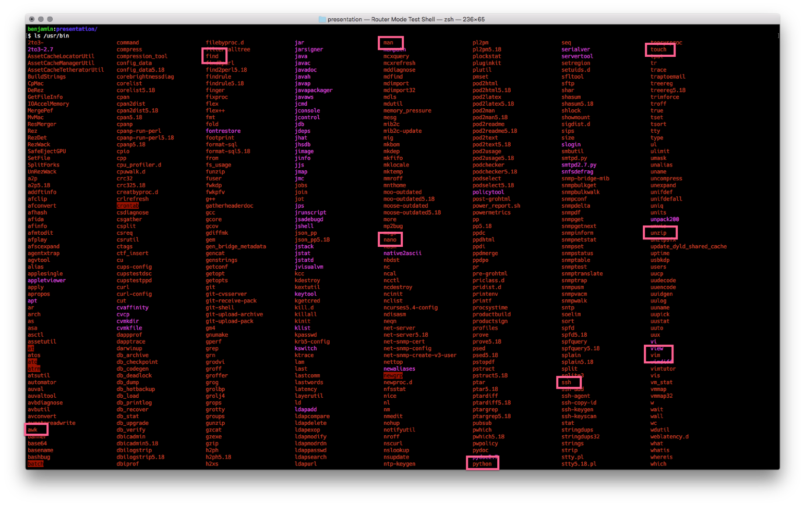
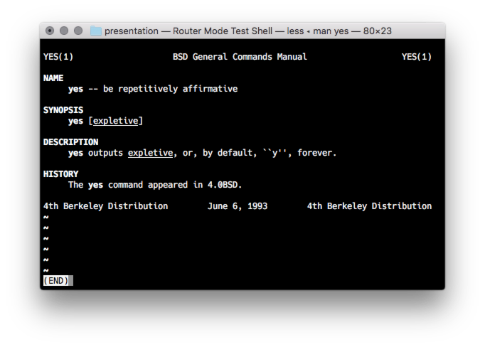
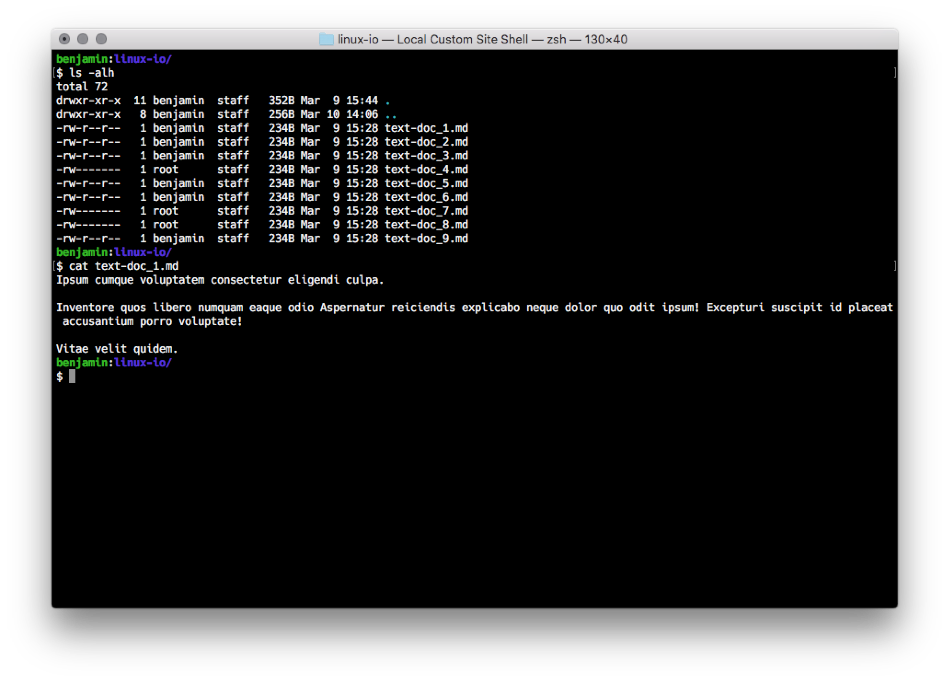
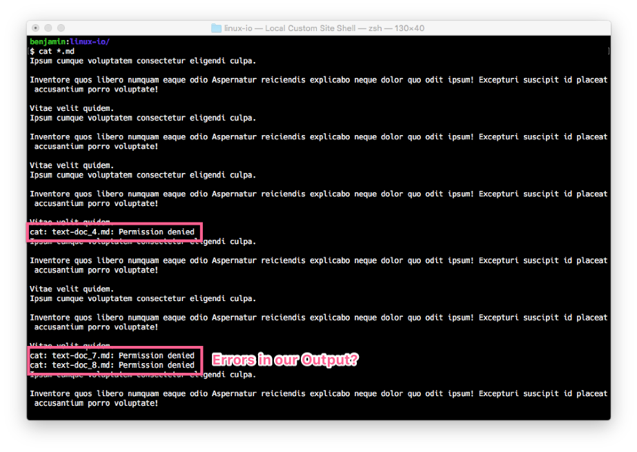
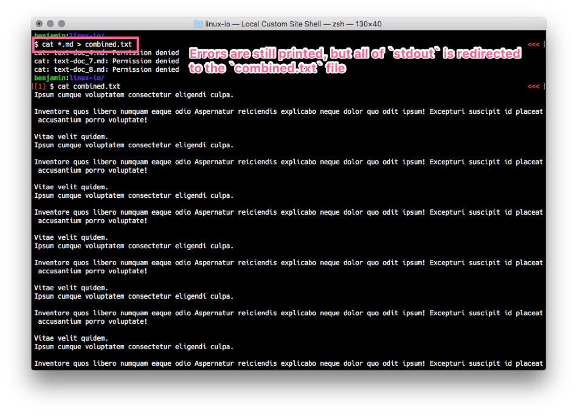
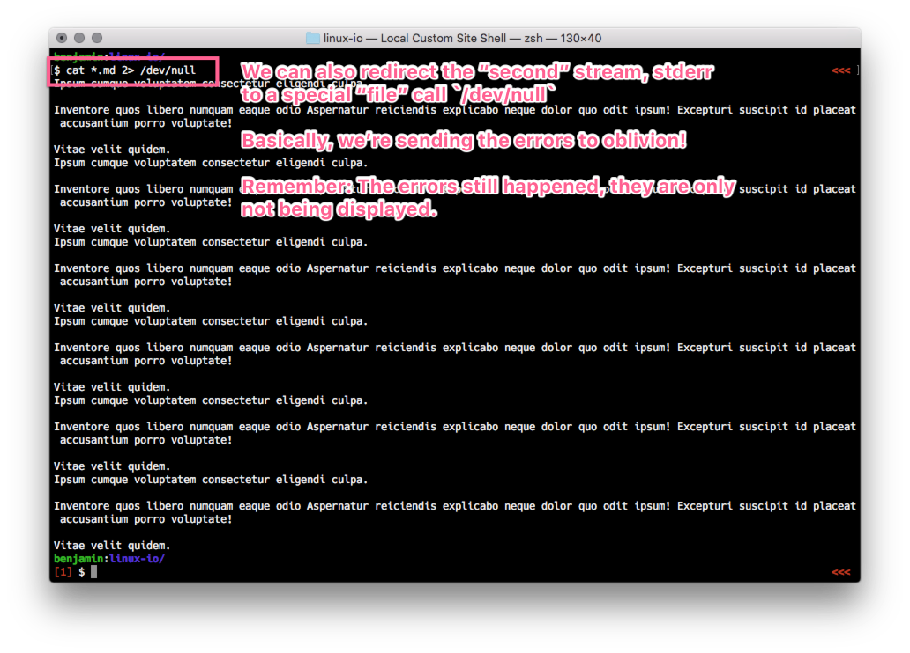

In *nix systems, everything is text.
Why are there so many programs?
ls /usr/bin



ls - list directory contentssort - sort or merge records (lines) of text and binary fileszip - package and compress (archive) filesExpect output to become input to another, as yet unknown program.
> >> < << |
stdinstdoutsterr

By default, both sterr and stdout are printed to the screen.
We can control this a bit, and have those streams redirected to files.
> and >> - Redirect (or append) to a file.< and << - Redirect from a file. Google for nuances of this!

The action of "piping" the output of one command into another.
What many of us are used to:
cat some.log | grep 'something'
ls -alh | grep 'another-thing'
|| Working with files | ls cd find mv cp rm |
| Working with streams of text | cat grep sed awk sort uniq |
| Archives (collections of files) | zip unzip tar |
find . -type f # only files
find . -type d # only directories
find . -size +1M # everything over 1M
find . -name '*.log' # anything that ends with .log
find . -size +1M -exec du -sh {} \; # give the "disk usage" of each file find finds
find . -name '*.php.txt' -exec rm {} \; # Find all files matching something, and rm them!
find . -name '*.log' -exec grep 'search-term' {} \; # find log files, and then grep for a string
zip and tarzip is a collection of compressed files.tar.gz is a compressed collection of files.